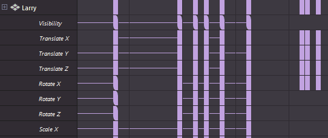

使用“烘焙通道选项”(Bake Channel Options)可设置要在曲线图编辑器(Graph Editor)和摄影表编辑器(Dope Sheet Editor)中烘焙的动画曲线部分。
- 在“曲线图编辑器”(Graph Editor)的“曲线”(Curves)菜单中，选择“烘焙通道”(Bake Channel) >

- 在“摄影表”(Dope Sheet)的“通道”(Channels)菜单中，选择“烘焙通道”(Bake Channel) >
另请参见烘焙关键帧。
时间范围(Time Range)
指定烘焙的关键帧。
- 时间滑块(Time Slider)
-
在“时间滑块”(Time Slider)中，位于“播放开始”(Playback Start)和“播放结束”(End)时间之间区域中的所有关键帧均会烘焙到新通道。

此设置是“曲线图编辑器”(Graph Editor)和“摄影表编辑器”(Dope Sheet Editor)的默认设置。
- 开始/结束(Start/End)
-
在“开始时间”(Start Time)和“结束时间”(End Time)字段中设置的指定时间范围内的所有关键帧都将烘焙到新通道。

- 开始时间(Start Time)
-
指定时间范围的开始。仅当“开始/结束”(Start/End)处于启用状态时才可用。
- 结束时间(End Time)
-
指定时间范围的结束。仅当“开始/结束”(Start/End)处于启用状态时才可用。
- 选择(Selection)
- 将由所选关键帧定义的范围内的关键帧烘焙到“摄影表”(Dope Sheet)大纲视图中选定的通道。
注： “选择”(Selection)选项仅在“摄影表 > 烘焙通道”(Dope Sheet > Bake Channel)选项中可用。
在“摄影表”(Dope Sheet)中烘焙选定通道
- 采样频率(Sample By)
-
指定 Maya 对动画进行解算及生成关键帧的频率。增加该值时，Maya 为动画设置关键帧的频率将会减少。减少该值时，效果相反。
“采样频率”(Sample By)值基于“时间单位”(Time Unit)设置。它表示 Maya 分析对象动画并生成关键帧时使用的频率。如果值为 1，则在每个时间单位处创建一个关键帧。增大该值将会减小生成关键帧的频率；减小该值将会增大频率。
- 保持未烘焙关键帧(Keep Unbaked Keys)
-
默认情况下会启用该选项。该选项将保留位于烘焙时间范围之外的关键帧，并且仅应用于直接连接的动画曲线。
启用时，烘焙模拟不会移除位于烘焙范围之外的关键帧。
禁用时，只有在烘焙期间在指定时间范围内创建的关键帧才会在操作之后出现在动画曲线上。
- 稀疏曲线烘焙(Sparse Curve Bake)
-
该选项仅对直接连接的动画曲线起作用。该选项会生成烘焙结果，该烘焙结果仅创建足以表示动画曲线的形状的关键帧。